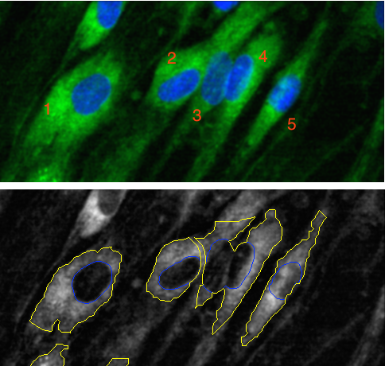

Introduction
So far, we have built a model and preprocessed data with a recipe. We also introduced workflows as a way to bundle a parsnip model and recipe together. Once we have a model trained, we need a way to measure how well that model predicts new data. This tutorial explains how to characterize model performance based on resampling statistics.
To use code in this article, you will need to install the following packages: modeldata, ranger, and tidymodels.
library(tidymodels) # for the rsample package, along with the rest of tidymodels
# Helper packages
library(modeldata) # for the cells data
The cell image data
Let’s use data from Hill, LaPan, Li, and Haney (2007), available in the modeldata package, to predict cell image segmentation quality with resampling. To start, we load this data into R:
data(cells, package = "modeldata")
cells
#> # A tibble: 2,019 x 58
#> case class angle_ch_1 area_ch_1 avg_inten_ch_1 avg_inten_ch_2 avg_inten_ch_3
#> <fct> <fct> <dbl> <int> <dbl> <dbl> <dbl>
#> 1 Test PS 143. 185 15.7 4.95 9.55
#> 2 Train PS 134. 819 31.9 207. 69.9
#> 3 Train WS 107. 431 28.0 116. 63.9
#> 4 Train PS 69.2 298 19.5 102. 28.2
#> 5 Test PS 2.89 285 24.3 112. 20.5
#> # … with 2,014 more rows, and 51 more variables: avg_inten_ch_4 <dbl>,
#> # convex_hull_area_ratio_ch_1 <dbl>, convex_hull_perim_ratio_ch_1 <dbl>,
#> # diff_inten_density_ch_1 <dbl>, diff_inten_density_ch_3 <dbl>, …
We have data for 2019 cells, with 58 variables. The main outcome variable of interest for us here is called class, which you can see is a factor. But before we jump into predicting the class variable, we need to understand it better. Below is a brief primer on cell image segmentation.
Predicting image segmentation quality
Some biologists conduct experiments on cells. In drug discovery, a particular type of cell can be treated with either a drug or control and then observed to see what the effect is (if any). A common approach for this kind of measurement is cell imaging. Different parts of the cells can be colored so that the locations of a cell can be determined.
For example, in top panel of this image of five cells, the green color is meant to define the boundary of the cell (coloring something called the cytoskeleton) while the blue color defines the nucleus of the cell.
Using these colors, the cells in an image can be segmented so that we know which pixels belong to which cell. If this is done well, the cell can be measured in different ways that are important to the biology. Sometimes the shape of the cell matters and different mathematical tools are used to summarize characteristics like the size or “oblongness” of the cell.
The bottom panel shows some segmentation results. Cells 1 and 5 are fairly well segmented. However, cells 2 to 4 are bunched up together because the segmentation was not very good. The consequence of bad segmentation is data contamination; when the biologist analyzes the shape or size of these cells, the data are inaccurate and could lead to the wrong conclusion.
A cell-based experiment might involve millions of cells so it is unfeasible to visually assess them all. Instead, a subsample can be created and these cells can be manually labeled by experts as either poorly segmented (PS) or well-segmented (WS). If we can predict these labels accurately, the larger data set can be improved by filtering out the cells most likely to be poorly segmented.
Back to the cells data
The cells data has class labels for 2019 cells — each cell is labeled as either poorly segmented (PS) or well-segmented (WS). Each also has a total of 56 predictors based on automated image analysis measurements. For example, avg_inten_ch_1 is the mean intensity of the data contained in the nucleus, area_ch_1 is the total size of the cell, and so on (some predictors are fairly arcane in nature).
cells
#> # A tibble: 2,019 x 58
#> case class angle_ch_1 area_ch_1 avg_inten_ch_1 avg_inten_ch_2 avg_inten_ch_3
#> <fct> <fct> <dbl> <int> <dbl> <dbl> <dbl>
#> 1 Test PS 143. 185 15.7 4.95 9.55
#> 2 Train PS 134. 819 31.9 207. 69.9
#> 3 Train WS 107. 431 28.0 116. 63.9
#> 4 Train PS 69.2 298 19.5 102. 28.2
#> 5 Test PS 2.89 285 24.3 112. 20.5
#> # … with 2,014 more rows, and 51 more variables: avg_inten_ch_4 <dbl>,
#> # convex_hull_area_ratio_ch_1 <dbl>, convex_hull_perim_ratio_ch_1 <dbl>,
#> # diff_inten_density_ch_1 <dbl>, diff_inten_density_ch_3 <dbl>, …
The rates of the classes are somewhat imbalanced; there are more poorly segmented cells than well-segmented cells:
cells %>%
count(class) %>%
mutate(prop = n/sum(n))
#> # A tibble: 2 x 3
#> class n prop
#> <fct> <int> <dbl>
#> 1 PS 1300 0.644
#> 2 WS 719 0.356
Data splitting
In our previous Preprocess your data with recipes article, we started by splitting our data. It is common when beginning a modeling project to separate the data set into two partitions:
-
The training set is used to estimate parameters, compare models and feature engineering techniques, tune models, etc.
-
The test set is held in reserve until the end of the project, at which point there should only be one or two models under serious consideration. It is used as an unbiased source for measuring final model performance.
There are different ways to create these partitions of the data. The most common approach is to use a random sample. Suppose that one quarter of the data were reserved for the test set. Random sampling would randomly select 25% for the test set and use the remainder for the training set. We can use the rsample package for this purpose.
Since random sampling uses random numbers, it is important to set the random number seed. This ensures that the random numbers can be reproduced at a later time (if needed).
The function rsample::initial_split() takes the original data and saves the information on how to make the partitions. In the original analysis, the authors made their own training/test set and that information is contained in the column case. To demonstrate how to make a split, we’ll remove this column before we make our own split:
set.seed(123)
cell_split <- initial_split(cells %>% select(-case),
strata = class)
Here we used the
strata argument, which conducts a stratified split. This ensures that, despite the imbalance we noticed in our class variable, our training and test data sets will keep roughly the same proportions of poorly and well-segmented cells as in the original data. After the initial_split, the training() and testing() functions return the actual data sets.
cell_train <- training(cell_split)
cell_test <- testing(cell_split)
nrow(cell_train)
#> [1] 1515
nrow(cell_train)/nrow(cells)
#> [1] 0.7503715
# training set proportions by class
cell_train %>%
count(class) %>%
mutate(prop = n/sum(n))
#> # A tibble: 2 x 3
#> class n prop
#> <fct> <int> <dbl>
#> 1 PS 975 0.644
#> 2 WS 540 0.356
# test set proportions by class
cell_test %>%
count(class) %>%
mutate(prop = n/sum(n))
#> # A tibble: 2 x 3
#> class n prop
#> <fct> <int> <dbl>
#> 1 PS 325 0.645
#> 2 WS 179 0.355
The majority of the modeling work is then conducted on the training set data.
Modeling
Random forest models are
ensembles of
decision trees. A large number of decision tree models are created for the ensemble based on slightly different versions of the training set. When creating the individual decision trees, the fitting process encourages them to be as diverse as possible. The collection of trees are combined into the random forest model and, when a new sample is predicted, the votes from each tree are used to calculate the final predicted value for the new sample. For categorical outcome variables like class in our cells data example, the majority vote across all the trees in the random forest determines the predicted class for the new sample.
One of the benefits of a random forest model is that it is very low maintenance; it requires very little preprocessing of the data and the default parameters tend to give reasonable results. For that reason, we won’t create a recipe for the cells data.
At the same time, the number of trees in the ensemble should be large (in the thousands) and this makes the model moderately expensive to compute.
To fit a random forest model on the training set, let’s use the parsnip package with the ranger engine. We first define the model that we want to create:
rf_mod <-
rand_forest(trees = 1000) %>%
set_engine("ranger") %>%
set_mode("classification")
Starting with this parsnip model object, the fit() function can be used with a model formula. Since random forest models use random numbers, we again set the seed prior to computing:
set.seed(234)
rf_fit <-
rf_mod %>%
fit(class ~ ., data = cell_train)
rf_fit
#> parsnip model object
#>
#> Fit time: 2.4s
#> Ranger result
#>
#> Call:
#> ranger::ranger(formula = formula, data = data, num.trees = ~1000, num.threads = 1, verbose = FALSE, seed = sample.int(10^5, 1), probability = TRUE)
#>
#> Type: Probability estimation
#> Number of trees: 1000
#> Sample size: 1515
#> Number of independent variables: 56
#> Mtry: 7
#> Target node size: 10
#> Variable importance mode: none
#> Splitrule: gini
#> OOB prediction error (Brier s.): 0.1218873
This new rf_fit object is our fitted model, trained on our training data set.
Estimating performance
During a modeling project, we might create a variety of different models. To choose between them, we need to consider how well these models do, as measured by some performance statistics. In our example in this article, some options we could use are:
-
the area under the Receiver Operating Characteristic (ROC) curve, and
-
overall classification accuracy.
The ROC curve uses the class probability estimates to give us a sense of performance across the entire set of potential probability cutoffs. Overall accuracy uses the hard class predictions to measure performance. The hard class predictions tell us whether our model predicted PS or WS for each cell. But, behind those predictions, the model is actually estimating a probability. A simple 50% probability cutoff is used to categorize a cell as poorly segmented.
The
yardstick package has functions for computing both of these measures called roc_auc() and accuracy().
At first glance, it might seem like a good idea to use the training set data to compute these statistics. (This is actually a very bad idea.) Let’s see what happens if we try this. To evaluate performance based on the training set, we call the predict() method to get both types of predictions (i.e. probabilities and hard class predictions).
rf_training_pred <-
predict(rf_fit, cell_train) %>%
bind_cols(predict(rf_fit, cell_train, type = "prob")) %>%
# Add the true outcome data back in
bind_cols(cell_train %>%
select(class))
Using the yardstick functions, this model has spectacular results, so spectacular that you might be starting to get suspicious:
rf_training_pred %>% # training set predictions
roc_auc(truth = class, .pred_PS)
#> # A tibble: 1 x 3
#> .metric .estimator .estimate
#> <chr> <chr> <dbl>
#> 1 roc_auc binary 1.00
rf_training_pred %>% # training set predictions
accuracy(truth = class, .pred_class)
#> # A tibble: 1 x 3
#> .metric .estimator .estimate
#> <chr> <chr> <dbl>
#> 1 accuracy binary 0.993
Now that we have this model with exceptional performance, we proceed to the test set. Unfortunately, we discover that, although our results aren’t bad, they are certainly worse than what we initially thought based on predicting the training set:
rf_testing_pred <-
predict(rf_fit, cell_test) %>%
bind_cols(predict(rf_fit, cell_test, type = "prob")) %>%
bind_cols(cell_test %>% select(class))
rf_testing_pred %>% # test set predictions
roc_auc(truth = class, .pred_PS)
#> # A tibble: 1 x 3
#> .metric .estimator .estimate
#> <chr> <chr> <dbl>
#> 1 roc_auc binary 0.909
rf_testing_pred %>% # test set predictions
accuracy(truth = class, .pred_class)
#> # A tibble: 1 x 3
#> .metric .estimator .estimate
#> <chr> <chr> <dbl>
#> 1 accuracy binary 0.837
What happened here?
There are several reasons why training set statistics like the ones shown in this section can be unrealistically optimistic:
-
Models like random forests, neural networks, and other black-box methods can essentially memorize the training set. Re-predicting that same set should always result in nearly perfect results.
-
The training set does not have the capacity to be a good arbiter of performance. It is not an independent piece of information; predicting the training set can only reflect what the model already knows.
To understand that second point better, think about an analogy from teaching. Suppose you give a class a test, then give them the answers, then provide the same test. The student scores on the second test do not accurately reflect what they know about the subject; these scores would probably be higher than their results on the first test.
Resampling to the rescue
Resampling methods, such as cross-validation and the bootstrap, are empirical simulation systems. They create a series of data sets similar to the training/testing split discussed previously; a subset of the data are used for creating the model and a different subset is used to measure performance. Resampling is always used with the training set. This schematic from Kuhn and Johnson (2019) illustrates data usage for resampling methods:

In the first level of this diagram, you see what happens when you use rsample::initial_split(), which splits the original data into training and test sets. Then, the training set is chosen for resampling, and the test set is held out.
Let’s use 10-fold cross-validation (CV) in this example. This method randomly allocates the 1515 cells in the training set to 10 groups of roughly equal size, called “folds”. For the first iteration of resampling, the first fold of about 151 cells are held out for the purpose of measuring performance. This is similar to a test set but, to avoid confusion, we call these data the assessment set in the tidymodels framework.
The other 90% of the data (about 1363 cells) are used to fit the model. Again, this sounds similar to a training set, so in tidymodels we call this data the analysis set. This model, trained on the analysis set, is applied to the assessment set to generate predictions, and performance statistics are computed based on those predictions.
In this example, 10-fold CV moves iteratively through the folds and leaves a different 10% out each time for model assessment. At the end of this process, there are 10 sets of performance statistics that were created on 10 data sets that were not used in the modeling process. For the cell example, this means 10 accuracies and 10 areas under the ROC curve. While 10 models were created, these are not used further; we do not keep the models themselves trained on these folds because their only purpose is calculating performance metrics.
The final resampling estimates for the model are the averages of the performance statistics replicates. For example, suppose for our data the results were:
| resample | accuracy | roc_auc | assessment size |
|---|---|---|---|
| Fold01 | 0.7828947 | 0.8419206 | 152 |
| Fold02 | 0.8092105 | 0.8939982 | 152 |
| Fold03 | 0.8486842 | 0.9174923 | 152 |
| Fold04 | 0.8355263 | 0.8941946 | 152 |
| Fold05 | 0.8684211 | 0.9063232 | 152 |
| Fold06 | 0.8410596 | 0.9136661 | 151 |
| Fold07 | 0.8807947 | 0.9368932 | 151 |
| Fold08 | 0.7814570 | 0.8890798 | 151 |
| Fold09 | 0.8145695 | 0.9075369 | 151 |
| Fold10 | 0.8675497 | 0.9310806 | 151 |
From these resampling statistics, the final estimate of performance for this random forest model would be 0.903 for the area under the ROC curve and 0.833 for accuracy.
These resampling statistics are an effective method for measuring model performance without predicting the training set directly as a whole.
Fit a model with resampling
To generate these results, the first step is to create a resampling object using rsample. There are
several resampling methods implemented in rsample; cross-validation folds can be created using vfold_cv():
set.seed(345)
folds <- vfold_cv(cell_train, v = 10)
folds
#> # 10-fold cross-validation
#> # A tibble: 10 x 2
#> splits id
#> <named list> <chr>
#> 1 <split [1.4K/152]> Fold01
#> 2 <split [1.4K/152]> Fold02
#> 3 <split [1.4K/152]> Fold03
#> 4 <split [1.4K/152]> Fold04
#> 5 <split [1.4K/152]> Fold05
#> 6 <split [1.4K/151]> Fold06
#> 7 <split [1.4K/151]> Fold07
#> 8 <split [1.4K/151]> Fold08
#> 9 <split [1.4K/151]> Fold09
#> 10 <split [1.4K/151]> Fold10
The list column for splits contains the information on which rows belong in the analysis and assessment sets. There are functions that can be used to extract the individual resampled data called analysis() and assessment().
However, the tune package contains high-level functions that can do the required computations to resample a model for the purpose of measuring performance. You have several options for building an object for resampling:
-
Resample a model specification preprocessed with a formula or recipe, or
-
Resample a
workflow()that bundles together a model specification and formula/recipe.
For this example, let’s use a workflow() that bundles together the random forest model and a formula, since we are not using a recipe. Whichever of these options you use, the syntax to fit_resamples() is very similar to fit():
rf_wf <-
workflow() %>%
add_model(rf_mod) %>%
add_formula(class ~ .)
set.seed(456)
rf_fit_rs <-
rf_wf %>%
fit_resamples(folds)
rf_fit_rs
#> # 10-fold cross-validation
#> # A tibble: 10 x 4
#> splits id .metrics .notes
#> * <list> <chr> <list> <list>
#> 1 <split [1.4K/152]> Fold01 <tibble [2 × 3]> <tibble [0 × 1]>
#> 2 <split [1.4K/152]> Fold02 <tibble [2 × 3]> <tibble [0 × 1]>
#> 3 <split [1.4K/152]> Fold03 <tibble [2 × 3]> <tibble [0 × 1]>
#> 4 <split [1.4K/152]> Fold04 <tibble [2 × 3]> <tibble [0 × 1]>
#> 5 <split [1.4K/152]> Fold05 <tibble [2 × 3]> <tibble [0 × 1]>
#> 6 <split [1.4K/151]> Fold06 <tibble [2 × 3]> <tibble [0 × 1]>
#> 7 <split [1.4K/151]> Fold07 <tibble [2 × 3]> <tibble [0 × 1]>
#> 8 <split [1.4K/151]> Fold08 <tibble [2 × 3]> <tibble [0 × 1]>
#> 9 <split [1.4K/151]> Fold09 <tibble [2 × 3]> <tibble [0 × 1]>
#> 10 <split [1.4K/151]> Fold10 <tibble [2 × 3]> <tibble [0 × 1]>
The results are similar to the folds results with some extra columns. The column .metrics contains the performance statistics created from the 10 assessment sets. These can be manually unnested but the tune package contains a number of simple functions that can extract these data:
collect_metrics(rf_fit_rs)
#> # A tibble: 2 x 5
#> .metric .estimator mean n std_err
#> <chr> <chr> <dbl> <int> <dbl>
#> 1 accuracy binary 0.833 10 0.0111
#> 2 roc_auc binary 0.903 10 0.00842
Think about these values we now have for accuracy and AUC. These performance metrics are now more realistic (i.e. lower) than our ill-advised first attempt at computing performance metrics in the section above. If we wanted to try different model types for this data set, we could more confidently compare performance metrics computed using resampling to choose between models. Also, remember that at the end of our project, we return to our test set to estimate final model performance. We have looked at this once already before we started using resampling, but let’s remind ourselves of the results:
rf_testing_pred %>% # test set predictions
roc_auc(truth = class, .pred_PS)
#> # A tibble: 1 x 3
#> .metric .estimator .estimate
#> <chr> <chr> <dbl>
#> 1 roc_auc binary 0.909
rf_testing_pred %>% # test set predictions
accuracy(truth = class, .pred_class)
#> # A tibble: 1 x 3
#> .metric .estimator .estimate
#> <chr> <chr> <dbl>
#> 1 accuracy binary 0.837
The performance metrics from the test set are much closer to the performance metrics computed using resampling than our first (“bad idea”) attempt. Resampling allows us to simulate how well our model will perform on new data, and the test set acts as the final, unbiased check for our model’s performance.
Session information
#> ─ Session info ───────────────────────────────────────────────────────────────
#> setting value
#> version R version 3.6.2 (2019-12-12)
#> os macOS Mojave 10.14.6
#> system x86_64, darwin15.6.0
#> ui X11
#> language (EN)
#> collate en_US.UTF-8
#> ctype en_US.UTF-8
#> tz America/Denver
#> date 2020-04-21
#>
#> ─ Packages ───────────────────────────────────────────────────────────────────
#> package * version date lib source
#> broom * 0.5.5 2020-02-29 [1] CRAN (R 3.6.0)
#> dials * 0.0.6 2020-04-03 [1] CRAN (R 3.6.2)
#> dplyr * 0.8.5 2020-03-07 [1] CRAN (R 3.6.0)
#> ggplot2 * 3.3.0 2020-03-05 [1] CRAN (R 3.6.0)
#> infer * 0.5.1 2019-11-19 [1] CRAN (R 3.6.0)
#> modeldata * 0.0.1 2019-12-06 [1] CRAN (R 3.6.0)
#> parsnip * 0.1.0 2020-04-09 [1] CRAN (R 3.6.2)
#> purrr * 0.3.4 2020-04-17 [1] CRAN (R 3.6.2)
#> ranger * 0.12.1 2020-01-10 [1] CRAN (R 3.6.0)
#> recipes * 0.1.10 2020-03-18 [1] CRAN (R 3.6.0)
#> rlang 0.4.5 2020-03-01 [1] CRAN (R 3.6.0)
#> rsample * 0.0.6 2020-03-31 [1] CRAN (R 3.6.2)
#> tibble * 2.1.3 2019-06-06 [1] CRAN (R 3.6.2)
#> tidymodels * 0.1.0 2020-02-16 [1] CRAN (R 3.6.0)
#> tune * 0.1.0 2020-04-02 [1] CRAN (R 3.6.2)
#> workflows * 0.1.1 2020-03-17 [1] CRAN (R 3.6.0)
#> yardstick * 0.0.6 2020-03-17 [1] CRAN (R 3.6.0)
#>
#> [1] /Library/Frameworks/R.framework/Versions/3.6/Resources/library